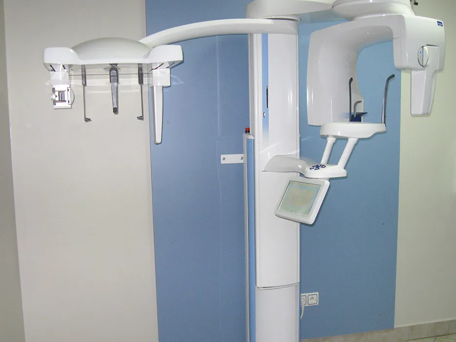
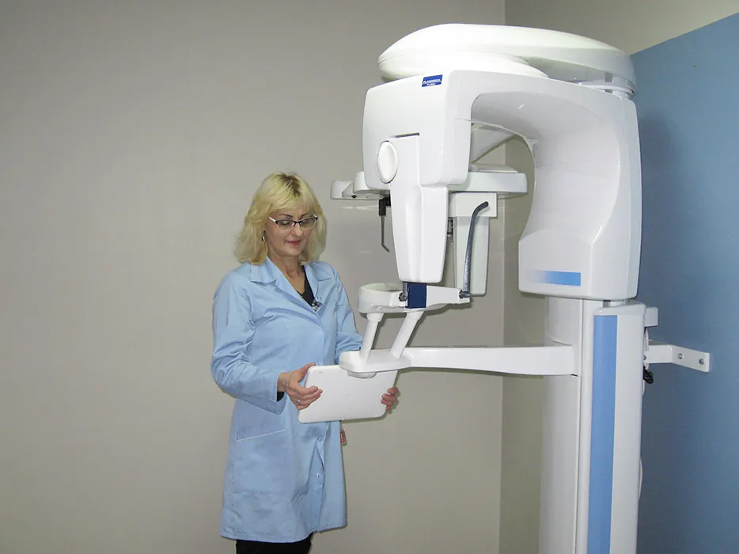

Pracownia RTG
Zdjęcie robimy w tym samym budynku co gabinet, więc nie trzeba jeździć do innej placówki.

Jakie zdjęcia wykonujemy
- Zęby (wewnątrzustne)
- Pantomogram
- Cefalometria (telerentgenogram)
- Zatoki szczękowe i czołowe
- Boczne twarzoczaszki AP
- Stawy skroniowo-żuchwowe
- Godziny pracowni
- pon., wt. 9:00-12:00
śr., pt. 15:00-18:00 - Skierowanie
- Na zdjęcie panoramiczne potrzebne jest pisemne skierowanie od lekarza.
W nagłych przypadkach zdjęcie zrobimy też w godzinach pracy gabinetu.

